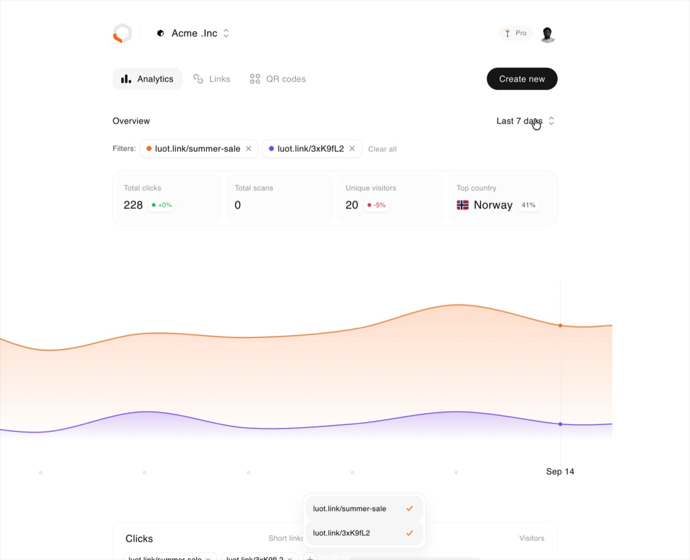

Luotain
Link shortening with QR code analytics. Every code tracks its own scans, and stays editable after it's printed.

Intro
If I had a nickel for every one of my projects that starts with an L, I'd have two nickels. Which isn't a lot, but it's weird that it happened twice.
Anyway, short links and qr code sites are treated as internet waste, you've 100% used one of these types of sites at least once and I'm very sure you don't remember what it was called.
Of course you have the "bitly"s but we're not talking about those guys right now lol.
Anyway, it's called Luotain which is a Finnish noun meaning "probe" or "detector". I know I know, really cool name, thanks thanks.
My role
I worked on this end to end which was a lot but to list it all out;
- Product strategy and UX direction
- Front end and back end engineering
- Social media accounts management and creating designs
- User research synthesis
- Information architecture
- Design systems
- High-fidelity UI design
- Interactive prototyping
- Design-engineering
Problem
You know those QR codes on restaurant tables. A place near me printed a few hundred of them for a new menu, then moved the menu to a different URL a month later, and every single card was dead. The code still scanned fine. It just went nowhere.
That stuck with me because it's such an easy thing to fix and nobody does. Every shortener I looked at treats QR codes like an afterthought. You make a link, then there's a button buried somewhere that hands you a PNG, and that PNG has no analytics and no way to change where it goes. So if you've stuck the same code on a flyer, a window and a receipt, you've got no idea which one people are actually scanning.
So that's what I built. Every link gets a code, the code has its own scan data, and you can change the destination whenever you want. Print it once, point it wherever.
Solution
You can just use it
The homepage isn't a screenshot of the app, it's the app. Paste a link in, get a real short link back. Flip to the QR tab and you get a real code you can restyle and download. No signup, nothing.
I did that because explaining this product in a paragraph never worked. Ten seconds of using it does the job instantly, so I stopped writing copy and just put the thing on the page.
The bit I'm actually pleased with is that the links follow you. If you make one on the homepage and then sign up in the same browser, it's already sitting in your account when you land, clicks and everything. Getting that wrong would have been rough. You try the product, you like it, you sign up, and the thing you just made is gone.
Making a link and making a code are the same screen
There's a toggle up top, Short link or QR code. It looks like it switches modes but it doesn't. Both do exactly the same thing, the toggle just decides where you end up afterwards.
I had it the other way at first, where the fields changed depending on what you picked, and it felt like two different tools sharing a screen. Nothing moves now.
The QR side does one extra thing. Most of the time a code is for something you already made, like a sticker for a menu you linked last week, so there's a picker for your existing links sitting right there.
Features
The designer
Colours, patterns, your logo in the middle. The corner squares get their own colour separately, which is the bit most people want, because you can brand those without touching the rest and breaking the scan.
Tap the code and it opens bigger and tilts toward your cursor. It lags behind the pointer slightly rather than following it exactly, and honestly that lag is the whole effect. When I had it tracking perfectly it felt twitchy and cheap.
Downloads are PNG or SVG, and the PNG comes out at 1024 with a white background. Transparency sounds like the nicer option right up until somebody drops the code onto a dark card, it inverts, and no phone can read it.
Which one worked
Four hundred clicks doesn't tell you anything. What you want to know is which of your five placements got them. So nothing is summed, it's all split by source, country and device.

The nice side effect is this works in places you can't put a script. Someone else's newsletter, a printed flyer, a DM. Analytics tags only work on pages you own, and a link works anywhere.
Comparing links side by side
This one's my favourite and it's easy to miss. On the clicks chart you can tap two or three links and it splits them out instead of showing you the total.
That's the whole point of the product really. If you've put the same thing on a flyer and in a newsletter, the number you want isn't 400 clicks, it's 240 from the flyer and 160 from the newsletter. Summing them throws away the only interesting part.
The rows animate to their new positions when the order changes rather than jumping, which took longer than the comparison itself. When you toggle a filter and the ranking shifts, rows sliding to where they belong reads as the data updating. Rows teleporting reads as a bug.
Bringing people in
You can invite people, and there are three roles. Owner, admin, member. Members can make links and read analytics, admins can also touch domains and billing, and there's one owner who can delete the whole workspace.
The bit I put effort into is the invite form. Most products make you invite one person, wait, then do it again. This one is a list you can keep adding rows to, each with its own email and role, because you're usually onboarding a team rather than a person.
Pressing enter on the last row adds another one, so you can invite five people without touching the mouse. Pending invites sit in the same list as actual members with their role showing, and you can cancel one if you got the email wrong.
Custom domains
This screen is boring and I'm weirdly proud of it. It has to teach DNS to someone who's never touched DNS, and get it right, because the record you need depends on the shape of your domain. go.yourbrand.com takes one kind, yourbrand.link takes another, and DNS flat out won't let you use the first kind at a root domain. So the page works out which you gave it and only shows you that one.
It checks in the background while you're waiting and stops when you switch tabs. And when it fails it tells you what went wrong instead of just going red.